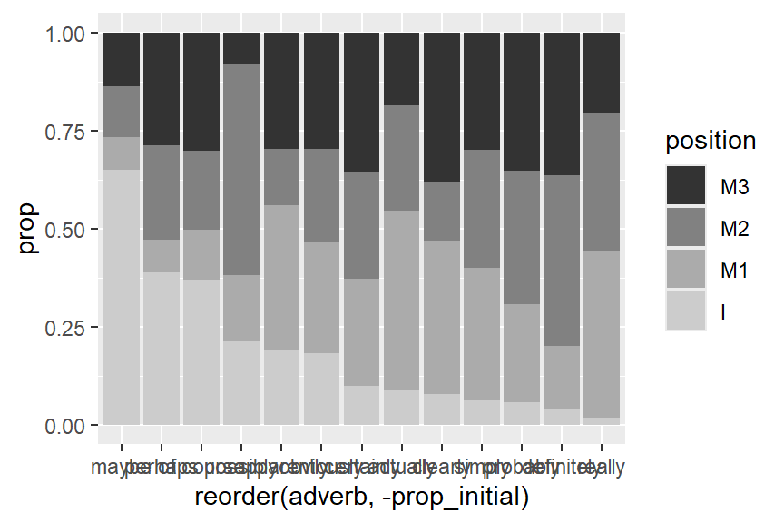
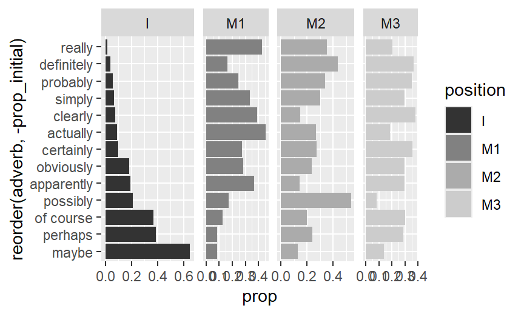
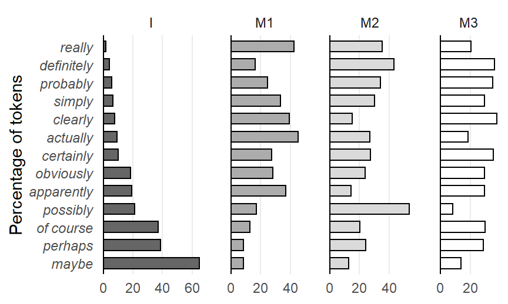

![]()
R setup
library(tidyverse){ggplot2} package.
I recently wrote a paper on the use of bar charts in corpus-linguistic research articles (see here). One of the questions of this systematic review was whether the bar chart is always the best choice. In Section 6.1 of the paper I discuss panel charts (see Camões (2016, 217–18), Schwabish (2021, 88–89)) as an alternative to stacked bar charts. In this blog post, I describe how to draw such a chart using the R package {ggplot2}.
library(tidyverse)For illustration, we use data from Larsson et al. (2020), a nice corpus study that looks at adverb placement in learner writing. These data are also the basis of Figure 6 and Figure 17 of the bar chart paper referenced above. They include frequency counts for cross-classifications of two categorical variables:
adverb: n = 13 levelsposition: n = 4 levelsThe counts reflect how often a particular adverb was observed in a particular position in the clause.
d <- data.frame(
adverb = rep(c(
"maybe", "perhaps", "of course", "possibly", "apparently",
"obviously", "certainly", "actually", "clearly", "simply",
"probably", "definitely", "really"), 4),
position = rep(c("M3", "M2", "M1", "I"), each = 13),
count = c(
13, 83, 85, 10, 25, 50, 61, 124, 138, 152, 169, 36, 58,
12, 70, 57, 66, 12, 40, 47, 181, 54, 154, 163, 43, 100,
8, 24, 36, 21, 31, 48, 47, 305, 142, 171, 119, 16, 121,
61, 112, 105, 26, 16, 31, 17, 61, 28, 33, 28, 4, 5)
)Let’s look at the contents of the data frame:
str(d)'data.frame': 52 obs. of 3 variables:
$ adverb : chr "maybe" "perhaps" "of course" "possibly" ...
$ position: chr "M3" "M3" "M3" "M3" ...
$ count : num 13 83 85 10 25 50 61 124 138 152 ...The next step is to add proportions to the data frame. These will reflect the relative frequency of the four positions within each adverb. For each adverb, the proportions therefore sum to 1. The {dplyr} package is useful for this task.
d <- d |>
group_by(adverb) |>
mutate(n_total = sum(count)) |>
ungroup() |>
mutate(prop = count / n_total)In principle, we are now good to go. However, I would also like to be able to order the adverbs in the plot according to the proportional share of position I (initial), so we also add a new column giving this value.
d <- d |>
group_by(adverb) |>
mutate(prop_initial = prop[position == "I"]) |>
mutate(position = fct_rev(position))Here is what the first few rows of the data frame look like:
head(d)# A tibble: 6 × 6
# Groups: adverb [6]
adverb position count n_total prop prop_initial
<chr> <fct> <dbl> <dbl> <dbl> <dbl>
1 maybe M3 13 94 0.138 0.649
2 perhaps M3 83 289 0.287 0.388
3 of course M3 85 283 0.300 0.371
4 possibly M3 10 123 0.0813 0.211
5 apparently M3 25 84 0.298 0.190
6 obviously M3 50 169 0.296 0.183We start by drawing a stacked bar chart, the rudimentary version first.
d |>
ggplot(aes(
x = reorder(adverb, # adverb on the x-axis
-prop_initial), # order adverbs by prop_initial
y = prop, # the proportional share as bar segments
fill = position)) + # position as a fill variable
geom_col() + # geom for bar segments
scale_fill_grey() # use grey fill colors
And the following enhanced plotting call creates a graph that mimics Figure 3 in Larsson et al. (2020), and which appears as Figure 6 in the bar chart paper.
d |>
ggplot(aes(
x = reorder(adverb,
-prop_initial),
y = prop,
fill = position)) +
geom_col(
col = 1, # add black contours around the bar segments
linewidth = .4, # make these contours thin
width = .6) + # reduce width of the columns of bars
scale_fill_grey(
start = .4, end = 1) + # customize shades of grey
ylab("Percentage of tokens") + # new y-axis title
xlab(NULL) + # remove x-axis title
theme_minimal() + # use different theme
scale_x_discrete(
expand = c(.05, .05)) + # control padding at left/right margin of plot
scale_y_continuous(
labels = c(0, 25, 50, 75, 100), # define locations of tick marks on y-axis
expand = c(.01, .01), # control padding at top/bottom margin of plot
minor_breaks = NULL) + # omit minor grid lines
theme(
axis.text.x = element_text( # modify tick mark labels on x-axis
angle = 45, # rotate by 45 degrees
hjust=1.2, # control horizontal adjustment
vjust=1.3, # control vertical adjustment
face = "italic"), # print adverbs in italics
panel.grid.major.x = element_blank(), # no vertical grid lines
legend.key.size = unit(.3, 'cm')) # reduce size of tiles in key
Next, we draw a panel chart, basic version first. Since we want to order the levels of position logically (initial at the far left), we must first reorder the factor levels of this variable:
d <- d |>
mutate(position = fct_rev(position))To switch to a panel chart, the key change is to make position into a faceting variable, which means that the different positions will appear in different panels. This requires adding four lines of code, which call facet_grid(). The arguments of this function do the following:
position should be arrange in the grid:
. ~ position: side by side, in a single rowposition ~ .: on top of one another, as a single columnscales = "free_x" says that the panels need not have the same limitsspace = "free_x" says that the panels need not have the same physical widthd |>
ggplot(aes(
y = reorder(adverb, -prop_initial),
x = prop,
fill = position)) +
geom_col() +
scale_fill_grey() +
facet_grid(
. ~ position, # draw separate facets for position, in rows
scales = "free_x", # allow upper limits of x-axis to vary across facets
space = "free_x") # allow width of facets to vary
And the following enhanced code draws the version that appears as Figure 17 in the bar chart paper.
d |>
ggplot(aes(
y = reorder(adverb, -prop_initial),
x = prop,
fill = position)) +
geom_col(
col = 1, # add black contours around the bar segments
linewidth = .4, # make these contours thin
width = .6) + # reduce width of the columns of bars
scale_fill_grey(
start = .4, end = 1) + # customize shades of grey
ylab("Percentage of tokens") + # new y-axis title
xlab(NULL) + # remove x-axis title
theme_minimal() + # use different theme
facet_grid(
. ~ position,
scales = "free_x",
space = "free_x") +
geom_vline(xintercept = 0) + # add a black reference line at 0
scale_x_continuous(
breaks = c(0, .2, .4, .6), # define locations of tick marks on y-axis
labels = c(0, 20, 40, 60), # define tick mark labels
expand = c(.01, .01), # control padding at top/bottom margin of plot
minor_breaks = NULL) + # omit minor grid lines
theme(
legend.position = "none", # omit legend
panel.grid.major.y = element_blank(), # no horizontal grid lines
axis.text.y = element_text(
face = "italic"), # print adverbs in italics
panel.spacing = unit(1.2, "lines")) # adjust spacing between facets
@online{sönning2025,
author = {Sönning, Lukas},
title = {Drawing Panel Charts in {R}},
date = {2025-11-29},
url = {https://lsoenning.github.io/posts/2025-11-28_drawing_panel_charts/},
langid = {en}
}